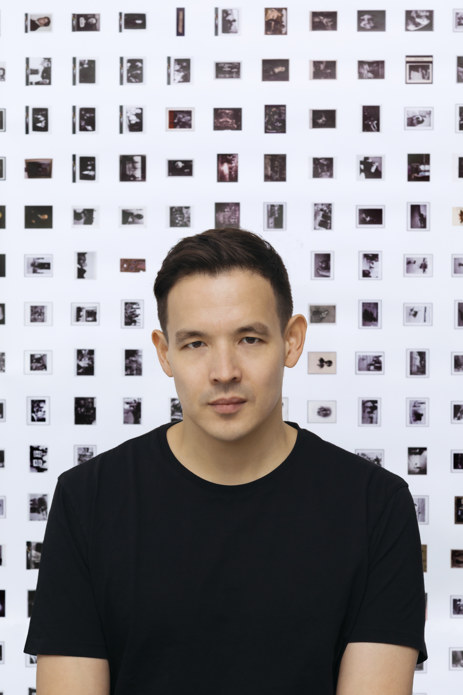

Exhibition Opening and Keynote
The VISAP 2026 exhibition, Amplification, will open on Wednesday, November 11, at 19:00 (US/Eastern) at the MIT Met Warehouse – Cambridge, MA, featuring a keynote by Richard The. The exhibition will remain open through November 13, alongside the IEEE VIS 2026 conference, showcasing artworks that explore creative, critical, and experimental approaches to data visualisation at the intersection of art, design, and technology. VISAP 2026 paper and pictorial contributions will be presented on Wednesday, November 11, from 08:00 to 14:30 (US/Eastern), in Hall St. George A–B at The Westin Copley Place, Boston. See the programme.
KEYNOTE
RICHARD THE
Richard The is a designer, educator and partner at TheGreenEyl, an interdisciplinary design studio based in Berlin and New York. His work explores the aesthetic and cultural implications of technology through graphic design, interactive interfaces and immersive installations. His projects have been exhibited internationally, including at the Venice Architecture Biennale, Ars Electronica and the Design Museum London. He is also an Associate Professor of Interaction Design at Parsons School of Design, where he directs the MS Data Visualization program.

OPENING
Exhibition